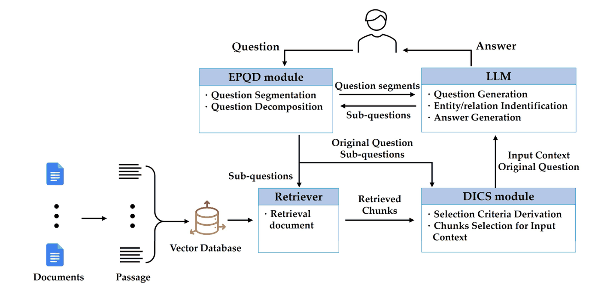
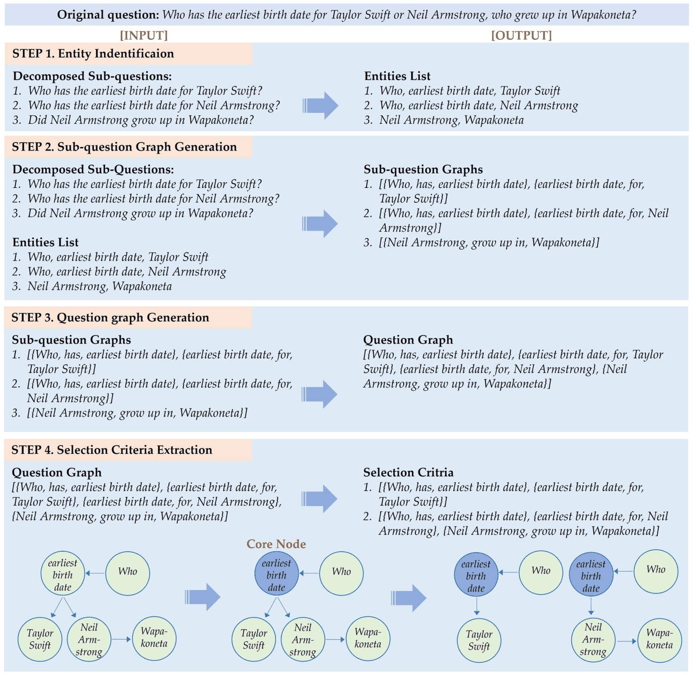
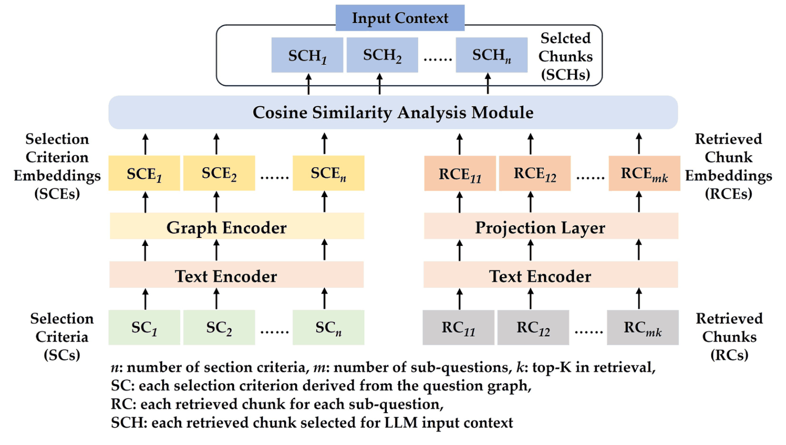

0.877입력 컨텍스트 F1 — 리랭킹 0.596 대비
−57%LLM 입력 청크 — 평균 8.0 → 3.5개
7.4%엔티티 누락률 — 기존 QD 70.2%
1SCIE 논문 — 공동 1저자 · 총장상
S배경 — 상용 멀티문서 QA의 3중 제약
사내 문서는 정보가 파편화돼 있어 대부분의 질문이 멀티문서 질문이 됩니다. 상용 서비스는 ① 누락 없는 검색, ② 낮은 LLM API 토큰 비용, ③ 낮은 운영 오버헤드를 동시에 요구합니다 — 청크를 많이 가져오면 ②가 무너지고, 문서를 그래프로 만들면 ③이 무너집니다. 표준 해법인 질문 분해(QD)도 LLM이 질문의 엔티티를 빠뜨리거나 없던 내용을 만들어 검색을 오히려 망가뜨립니다.
T역할 — 3인 공동 1저자, 논문에 명시된 기여
A설계와 구현
EPQD가 질문을 나눠 검색 누락을 막고(①), 그때 늘어난 청크를 DICS가 걷어냅니다(②). 문서가 아니라 질문만 그래프로 다루므로 운영 부담도 늘지 않습니다(③). LangChain 확장 · GPT-4o · FAISS.

01기존 분해가 무엇을 망가뜨리는가
- 과잉 — 답에 필요 없는 서브질문까지 생성해 검색 범위와 청크 수만 늘림
- 누락 — "몇 개인지" 같은 핵심 조건이 사라져 근거 자체가 빠짐 (가장 치명적)
- 변형 — 원 질문에 없던 질문이 생성돼 엉뚱한 청크가 들어옴
- 이를 재는 지표가 없어 EAR(엔티티 추가율)·EOR(엔티티 누락율)을 직접 정의 — 검색 결과가 아니라 분해 자체를 측정
02EPQD — 규칙이 구조를 잡고, LLM은 조각만 완성한다
원 질문 → 접속사·쉼표로 분절 (따옴표 예외) → 조각 + 원 질문 전체를 함께 프롬프트 → 조각당 서브질문 1개
- 멀티문서 질문은 비교 대상이 접속사·쉼표로 나뉘므로, 결정적 규칙으로 먼저 자르고 LLM에는 조각을 완성시키는 일만 맡김
- 프롬프트 원칙 3개가 실패 유형을 각각 봉쇄 — 원 질문 동반(변형·누락), 원문 용어 보존(누락), 서브질문 수 = 조각 수(과잉)
EOR · 복잡 질문 500문항LangChain 70.2% → EPQD 7.4%
EAR · 복잡 질문 500문항47.3% → 14.4%
03DICS(팀 설계) — 질문을 가르는 "공통 원소"
"Taylor Swift와, Wapakoneta에서 자란 Neil Armstrong 중 누가 먼저 태어났나?"에 필요한 정보는 두 사람의 출생일이고, 둘의 공통 원소가 "출생일"입니다. 이 원소를 질문 그래프에서 코어 노드(진입 차수가 몰리는 노드)로 찾아, 그 노드를 지나는 경로를 선택 기준으로 삼습니다. 기준 수 = 입력 청크 수이므로 top-K 고정이 사라집니다.
- 원 질문 대신 EPQD의 서브질문으로 그래프를 만듦 — 짧은 문장일수록 그래프 생성 오류가 적어서
- 관계는 타입 없이 방향만 사용 — LLM이 없던 관계를 만들어 그래프를 부풀리는 위험을 설계로 제거

04GS 모델(팀 설계) — 기준은 그래프로, 청크는 텍스트로
기준을 텍스트로 되돌리면 정보가 손실되므로 그래프째 임베딩(GAT)하고, 청크는 텍스트 임베딩 + 투영 레이어로 정렬해 코사인 유사도로 기준마다 청크 하나를 고릅니다.
- 학습은 InfoNCE 대조학습 — 기준에 대응하는 정답 청크를 positive로
- 청크는 그래프로 만들지 않음 → 파라미터 174.7M (BGE-Reranker 567.8M의 30%)

05검증 조건을 데이터부터 만들었다
- 기존 셋(HotpotQA·Multi-hop RAG)은 정답 청크가 2개 이하이거나 다 없어도 답이 나와 프레임워크 차이가 지표에 드러나지 않음
- 그래서 정답 청크 2~4개가 모두 필요하고 정답이 문서에 명시되지 않은 멀티문서 QA 4,000문항을 GPT-4o로 구축 (랭킹·비교형, 공개)
- 벤치마크 3종으로 반론을 차단 — 분해 없음 / 분해만 / 고정 top-K 리랭킹 vs DS-RAG
R결과
랭킹형F1 0.832 · 청크 3.95개 (리랭킹 0.569 · 8.58개)
비교형F1 0.923 · 청크 3.01개 (리랭킹 0.623 · 7.46개)
- 입력 컨텍스트 F1 0.877(평균) — Recall은 유지하면서 Precision을 2배 가까이 올린 결과. 같은 구간에서 입력 청크 8.0 → 3.5개(−57%)
- 단, 답변 품질(ANLS)은 리랭킹이 약간 높습니다 — 논문은 ANLS가 Recall에 지배되기 때문으로 봤습니다. DS-RAG의 이득은 같은 품질대를 절반 비용으로 달성한 것
- Electronics (MDPI, SCIE) 14(4):659, 2025 공동 1저자 — 기여 명시: EPQD 방법론·구현·데이터셋·실험·초고, 캡스톤 총장상
W설계 선택의 이유
규칙 분할 + LLM 생성분해를 LLM에 통째로 맡기면 질문이 변형됨 — 결정적 규칙(접속사·쉼표)이 구조를 잡고, LLM은 조각을 완성하는 역할로 좁힘
EAR·EOR 자체 지표검색 F1로는 "분해가 무엇을 훼손했는지"를 못 잼 — 원 질문과 서브질문의 엔티티 집합을 직접 비교하는 지표를 정의
데이터셋 자체 구축기존 셋은 정답 청크가 적고 유출이 있어 프레임워크의 차이가 지표에 안 드러남 — 검증이 성립하는 조건을 데이터부터 설계
GPT-4o 고정분해 방식 간 비교에서 모델 변수를 제거해 재현성 확보
+회고 — 논문에 남긴 한계와 다음
- 상용 API 의존이 남긴 비용·지연은 미해결 — 도메인 파인튜닝한 sLLM으로 대체하는 방향을 후속 과제로 명시
- 데이터셋이 위키 기반이라 실사용 질문의 다양성을 다 담지 못함 — LLM 기반 생성 방식을 확장해 도메인 특화 QA 데이터셋 자동 생성으로 잇는 것이 다음 단계